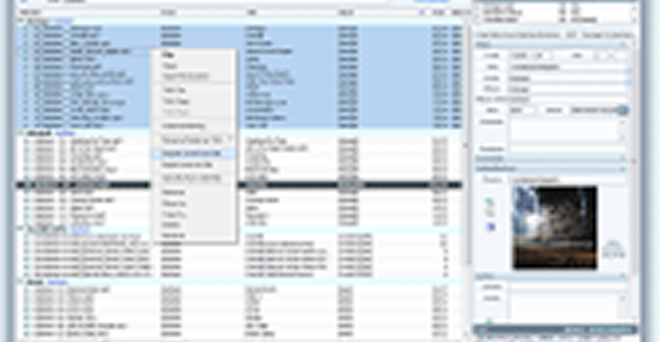

Projetos FreeWare ou Código-Aberto que planejo, que já apoiei ou apoio financeiramente (não quer dizer que foi um valor absurdo :)) ou de outra maneira (trabalho voluntário). Essa lista serve para conhecer bons sistemas que valem uma pequena, ou grande, contribuição. Lembrando que os projetos de código aberto a sua melhor contribuição é com código, traduções, ou seja, força de trabalho e não financeiramente (claro que dinheiro ajuda :P).
Futuros:
TagScanner (FreeWare)TagScanner is a multifunction program for organizing and managing your music collection. It can edit tags of common audio formats, rename files based on the tag and stream information, generate tag information from filenames, and perform any transformations of the text from tags and filenames. Also you may get album info and covers via online databases like freedb, Amazon or Discogs. Supports ID3v1, ID3v2, Vorbis comments, APEv2, WindowsMedia and MP4(iTunes) tags. Powerful TAG editor with batch functions and special features. Playlists maker with ability to export playlists to HTML or Excel. Easy-to-use multilanguage interface. Built-in player.
Deixe seu recado